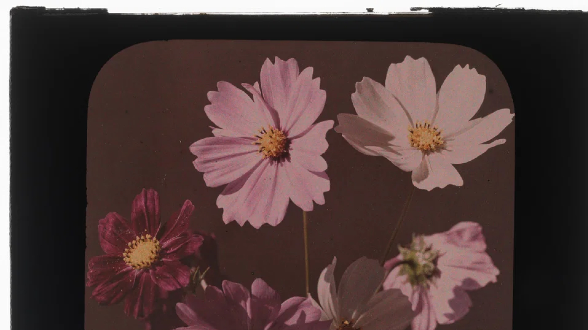

Adults and Their Egos

My evening walks consist of me walking back and forth in a straight line on the same, usual road. Each return to the starting point counts as one round, and I typically do three or four rounds depending on how I am feeling that day (I walk more when there is more to think about). The road is surrounded by trees on both sides and can have a pleasant atmosphere, if not for the moderate traffic that exists alongside. Still, it is a decent spot and an eventful one at that, for no two days occur in the same way; I always see new people, new cars and hear different conversations on a daily basis.
This particular day I saw two children fighting while going about my usual route. The fight was intense. They grabbed each other's hair, then relentlessly continued slapping and kicking each other while holding on. Curses and abuses were thrown around. Not too vulgar by adult standards, but certainly not something you want to hear from a child's mouth either. They then proceeded to hurl amateurish insults at each other that frankly, I hadn't heard since my own school days. It is the kind that feels like a comedy sketch to us adults due to the sheer stupidity of some of the statements, but is taken super seriously and feels really offensive to the child receiving them.
"You act like a girl!" kid one says to kid two.
"You are a girl!" kid two replies back in retaliation.
"You are STUPID, STUPID!"
"YOU, YOU! YOUR WHOLE FAMILY!"(Kid two had a crazy high pitch voice, the kind that destroys both - your ears, and the speaker's larynx.)
"Same to you multiplied by two." (I really don't know how this insult works on a mathematical level.)
"BACK TO YOU, MULTIPLIED BY THOUSAND."
"Shut up you idiot!"
Obvious enough, they were both boys; around eight or nine years of age, their faces now red in anger... and also probably bruised from all that slapping. If you are wondering where were their parents, well, they were nowhere to be found; I assumed that they lived nearby and this was a usual occurrence for them, but personally, the fight and its associated emotions were so strong that I thought that these two will never be able to bear each other's sight again.
A passerby, more closer to them than I was, separated the fighting boys as I was approaching the end of the road, ready to turn around and walk back the distance to complete my round. And as soon as I turned around I witnessed the two boys, hand over each other's shoulder, smiling as if they weren't trying to inflict mortal wounds some thirty odd seconds ago. They were now discussing visiting each other's house and their favourite food; I don't remember the exact details of that conversation, because I was just stunned at that quick transition.
Clearly kids understand something we adults don't - they don't hold grudges. Pent up emotions, anger, sentiments of revenge and an attitude of unforgiveness - these don't occupy a child's heart, for they live inside ours. Kids fight, they get it out of their system, shake hands and move on; now, possibly friendlier than ever before.
Meanwhile, here we are, forever upset over words and miscommunication. Angry over the smallest of things, refusing to let the past die. I have seen brothers not get along, friendships broken over misunderstandings, families that cannot sit at the dinner table together because they cannot stand each other anymore. I mean, a legitimate reason could indeed exist, but somewhere along the way, as we grow older there exists a strong possibility that our hearts might get corrupted. The concept of ego and pride takes hold of a man, and then it becomes impossible to make sense of a situation from a grounded perspective.
Childhood innocence allowed us to say sorry and not feel insecure about the same. As adults we are fueled by fictitious concepts of superiority, and it doesn't allow us to move on.
I mean, obviously, not every adult is like this; I am just making a general observation.
I just hope that over exposure to social media and the digital world doesn't accelerate the aging process for young children and the future generations. Let them act in a natural state, unaffected and uninfluenced by the egotistical, materialistic and greedy world that surrounds us. I also wonder what steps we could take to make sure that they retain their forgiving and humble nature into their old age?
I think that would make the world a better place.
Or perhaps, maybe, that is just wishful thinking on my part.
Image Credits
Photograph by Harold A. Taylor